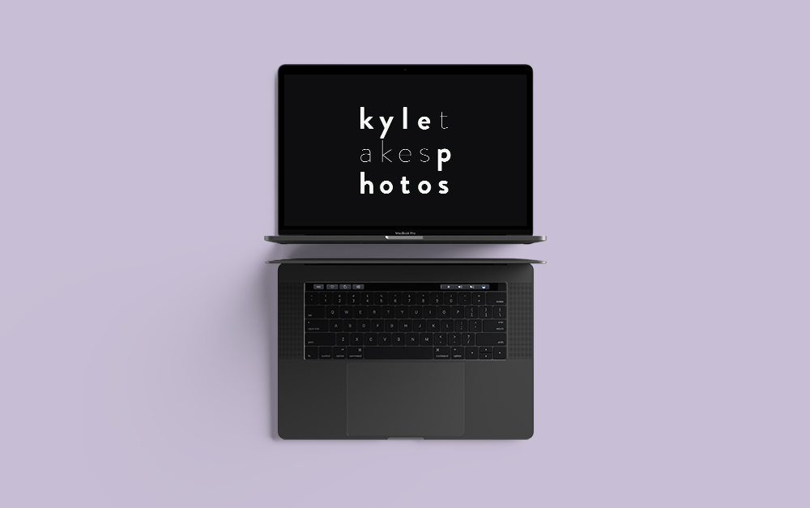

kyletakesphotos
The purpose of this project was to create a website to showcase my photography as
well as to embody my creative persona. As I am a casual photographer and not tied
to any specific type of photography, I wanted this site to be nonchalant, and
exemplify a sense of self-discovery, like it’s figuring itself out because that’s
how I am with my own photography.
Project Information
| Tags | Branding, Web Design, Motion Graphics |
| Duration | 1o Weeks (Part Time) |
| Role | Designer + Developer (Solo project) |
OBJECTIVE
This project went through five stages: Brand Development, Web Design, Motion Graphics, Development and Mobile Development. I was aware that mobile design and development should have been concurrent with the overall site design, but at the time, I chose to focus on figuring out the best way to showcase big, high-res images, leaving a mobile layout out of scope for the moment. So, I set it up to do at a later time.
PROJECT BREAKDOWN
September 2018 - November 2018
| DELIVERABLE | DURATION | DESCRIPTION |
|---|---|---|
| Branding | 2 Weeks | Logo and Brand Guidelines |
| Web Design | 2 Weeks | Website Mockups, Wireframes with Layout Grid |
| Development | 2 Weeks | Desktop version of website fully-coded |
| Motion Graphics | 1 Week | Conceptualized and fully-coded (with JQuery) |
| Mobile Design + Dev | 3 Weeks | Mobile site mockups, layout wireframes and website fully-coded |
APPROACH
Stage 1: Branding
The main challenge when it came to developing my
photography brand was designing the logo. I use the moniker kyletakesphotos
because I don’t consider nor like calling myself a “photographer.” As I take
pictures just for fun and not professionally, I wanted my logo to not take itself
seriously. When it comes to taking photos, some of my best shots have come from
just randomly pointing my camera and firing the shutter. Evidence that I am
definitely not a professional.
After about a week of sketches, playing around with fonts and letter layouts and
asking for feedback from my instructor and classmates, I was pleased with my final
result. My logo seems organized, but the letters are a bit off which I really like.
It looks like it’s trying to figure things out, which I am with my photography. In addition
to the main logo, I also produced an icon to be used when the logo is too big to be used (e.g.
social media display photo, favicon, etc.). Once finished, I took another week to create my
branding guidelines: selecting my colors, typography, hierarchy, and more to go with my brand.
EARLY LOGO SKETCHES
FINAL LOGO
VIEW BRANDING GUIDELINES
Stage 2: Web Design
The intention of this website was to simply show off my photos. I could have gone with a simple grid view of all my images but as this was my own personal passion project, I wanted to have fun with it but also challenge myself a bit. Aesthetically, I knew it would be very minimal, as per my brand, so my goal was to show off a bit of my creative personality with the layout.
EARLY HOME PAGE WIREFRAME
My home page went through several iterations. Initially, I had a more
condensed grid layout, but
after developing the page and putting sample images in, I realized this didn’t give any breathing
room to my photos.
With this in mind, my goal became to create an art exhibit-like layout,
with a few centerpiece images and various other images scattered throughout. Like how you walk around an
art gallery, letting the size of the art and their placement guide your way, I envisioned users scrolling
through and being drawn to whatever catches their eye. I’ll likely never have my own art exhibit, so this
is as close as it’ll get.
For the individual gallery layouts, after some trial and error, I landed with
having them all with the same grid layout but rearranged in different places for each different gallery. This juxtaposes the main
layout, which is all scattered and seemingly random whereas the individual gallery is neat and conformed.
The layouts of my images wouldn’t have sat well with me if they were all the same so this juxtaposition
strikes a balance between the two.
PORTRAIT GALLERY WIREFRAME
WHATEVER GALLERY WIREFRAME
Lastly for the about page, I went for a bold and dynamic approach to balance out my very minimalist site (because
just a white background with some text and a photo of me would be too easy and boring). For this, I decided to
have my face take up two-thirds of the background and place the ‘about me’ text to the side. I think I
accomplished what I sought out to do because it still takes me aback when I visit that page.
ABOUT PAGE WIREFRAME
ABOUT PAGE MOCKUP
Stage 3: Development
Since my website is simple and static, development was an easy, yet tedious task. I developed the site in just vanilla HTML and CSS, as well as Javascript and JQuery later on when I implemented the photoviewer and the motion graphics. Part of the reason I wanted a different photo layout was to have more practice using CSS Grid, which made placing my images where I wanted to precisely incredibly simple. For the home page layout, I used a 12fr column grid, with rows measuring 112px. I set it up like this in order to match my mockup.
HOME PAGE WIREFRAME WITH CSS GRID OVERLAY
Looking back on it, and with more development experience under my belt, I realize this wasn’t the best way to do this, but hey, lesson learned.
For the individual gallery layouts, I used a six column grid, with the columns measuring the same size as the rows to ensure they were all square-shaped.
GALLERY PAGE WIREFRAME WITH CSS GRID OVERLAY
Lastly, the about page was simply defining a 3x3 grid and placing elements where they needed to be. Though, setting up the (oh-so beautiful) image of my face was tricky since the div it was contained in is skewed. To fix this, I just had to skew the image the opposite way (in Photoshop) so when the CSS rule skews it, it looks normal.
ABOUT PAGE MOCKUP WITH CSS GRID OVERLAY
Stage 4: Motion Graphics
The biggest hurdle for this part of the project was the page transition animation. I had an idea of what it looked like in my head, and since I was a one-man band for this project, there wasn't any need to spend time prototyping it. For the animation, I used JQuery, specifically the animate function to make the transition div swipe through, fade in the logo, and then swipe and fade out. This transition takes place when the user navigates to another page.
Stage 5: Mobile Design + Development
As with most mobile layouts, I wanted the mobile version to resemble and contain as many elements from the desktop version as possible. My main challenge became figuring out the best way to make the navigation suitable for mobile devices. Like most things during this project, I could have gone the conventional route and implemented a hamburger menu. But I felt a menu bar would distract from my images so I opted for a menu button containing my icon logo. I knew it wouldn't be immediately obvious what the button would do, but after testing it with some users, I concluded it was a harmless interaction (open/close the navigation menu) that wouldn’t affect the user experience. Design-wise,the mobile layouts are all reminiscent of their desktop counterparts.
MOBILE WIREFRAME
MOBILE NAVIGATION
As I initially made this website for desktop only, adapting the code for mobile was a very tedious task, as I had to refactor the code in order for the site to take a mobile-first approach. This involved developing the mobile version first, then refactoring my initial code into media queries.
Final Product
VIEW WEBSITE
Lessons Learned
First and foremost, mobile-first when designing websites. I knew of this at the time I started designing my website, but at the time, I didn’t want to create more work for myself than necessary as I had other projects on the go. Though I now fully understand this thinking, mainly from a developer’s point of view.
Second, testing designs before development. There were times when I did, avoiding a headache during development, and other times I didn’t, where I just had to buckle down and dive headfirst into code, cursing out my designer self. Like the first point, this was something I was aware of: how changes during design are less costly than changes during development. However, what seemed to look good in the design, didn’t pan out when I went on to code it. An example of this is when I developed the main page after just one iteration, and realizing the photos felt congested. This website was for a web development class, so at the time, testing wireframes/mockups wasn’t a recurring thought as it is now (after taking more design courses).
Lastly, and this piggybacks on the previous point, I learned the importance of understanding the scope of a project, and taking the proper steps before proceeding to the next stage. Over the course of this project, I often would look forward to the next stage, before completing the current stage. I think because this was a personal project, which I had full reign over, I was excited to do everything and try different things. This resulted in me underlooking and overlooking details, which would either would extend the next phase of the project or unnecessarily revisiting the design.